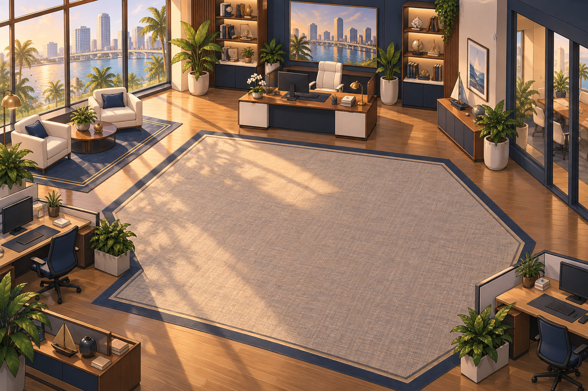
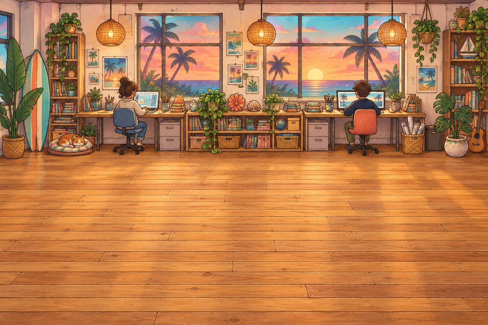

DECISION 01 / 08
24 September 2026
A hand-drawn storybook
Direction selected
Vero asked for a cute, hand-drawn cutaway seen from an elevated side view. It replaced the original static isometric office direction.
The room became a place to walk through, with layered scenery. The artwork shown here records that early change; it is not the latest room.
Source & art credits
- Source: the project decision log and setting brief, 24 September 2026.
- Generated with the built-in image-generation tool. The underlying raster model was not recorded.

